Capture Log · 2026.10.26 · ← 관광벤처창업론으로
창업 아이템 PT(사업계획서) 작성을 위해 캡처한 참고 슬라이드 34장을 강의 커리큘럼(1단계 문제인식 → 2단계 실현가능성·차별화 → 3단계 비즈니스 성장 전략) 순서로 재정렬했다. 왼쪽은 원본 캡처, 오른쪽은 텍스트 내용(OCR)이다.
출처: 티엔티 스피치 — 「나도 합격할 수 있는 예비창업패키지 사업계획서 작성하기(2,300억 투자 유치)」
Chapter 1 · [기본편] 정부지원사업 지원금으로 창업하기
Chapter 2 · [실전편] 1단계. 문제인식과 아이템 개발 동기
Chapter 3 · [실전편] 2단계. 실현 가능성과 차별화 방안
Chapter 4 · [실전편] 3단계. 비즈니스 성장 전략
Chapter 5 · [실전편] 4단계. 팀 구성과 핵심 요약
Chapter 6 · [Q&A] 예창패 합격을 위한 꿀팁 모음
Outro
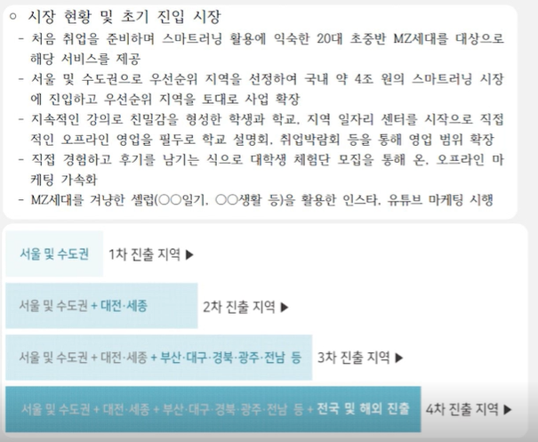
OCR Text
진출 단계
1차 → 2차 → 3차 → 4차 진출 지역 순
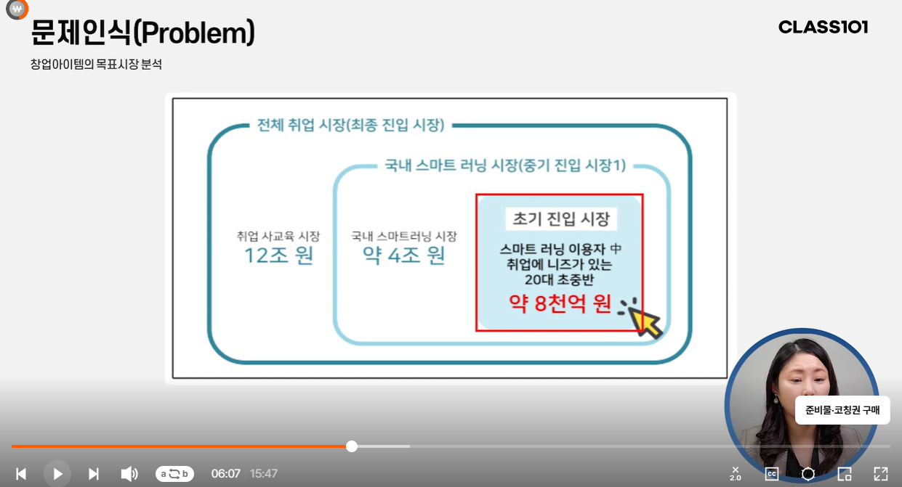
OCR Text
전체 취업 시장을 기준으로 안쪽으로 좁혀가는 동심원(TAM–SAM–SOM) 구조.
01번(시장 현황 및 초기 진입 시장)과 같은 맥락 — 지역 확장 전략(01) + 시장 규모 산정(02)으로 짝을 이루는 자료
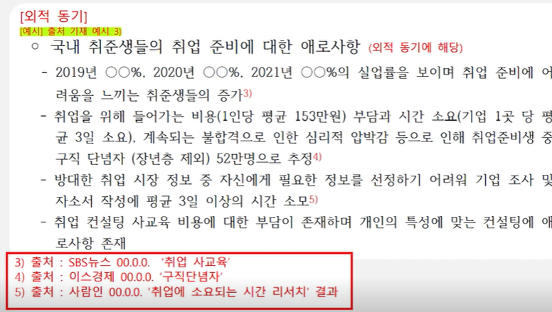
OCR Text
국내 취준생들의 취업 준비 애로사항
3) SBS뉴스 '취업 사교육' · 4) 이스경제 '구직단념자' · 5) 사람인 '취업에 소요되는 시간 리서치' — 출처 표기 형식 예시
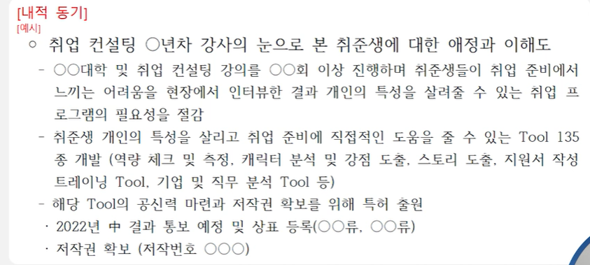
OCR Text
취업 컨설팅 ○년차 강사의 눈으로 본 취준생에 대한 애정과 이해도
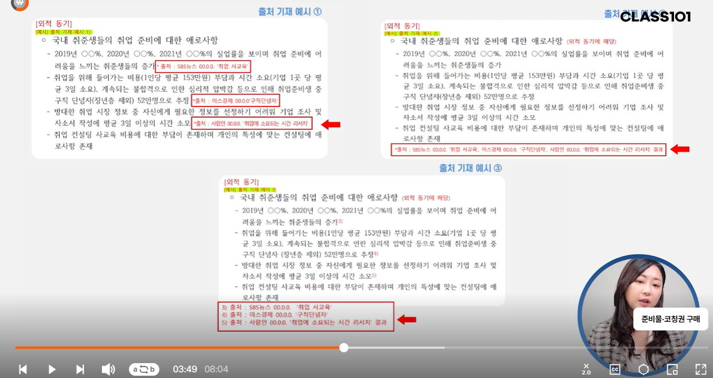
OCR Text
03번과 같은 "외적 동기" 문단을 두고, 출처 표기 방식만 세 가지로 비교한 화면.
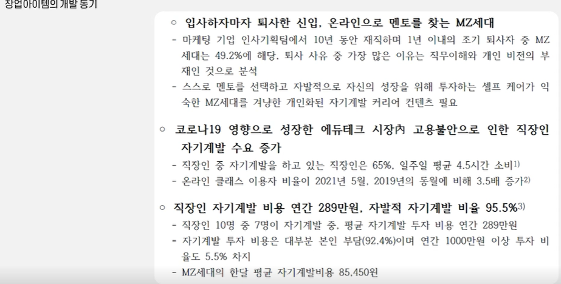
OCR Text
입사하자마자 퇴사한 신입, 온라인으로 멘토를 찾는 MZ세대
코로나19 이후 에듀테크 시장 내 자기계발 수요 증가
직장인 자기계발 비용
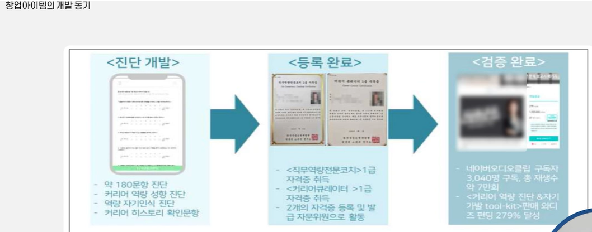
OCR Text
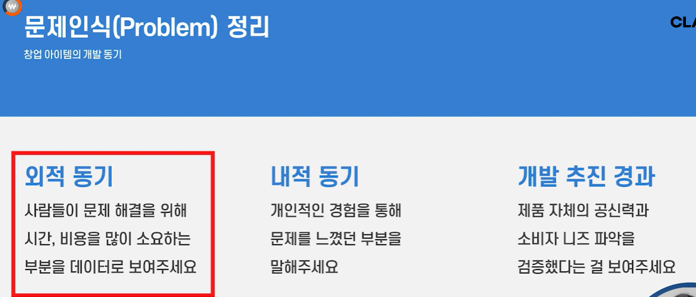
OCR Text
| 외적 동기 | 사람들이 문제 해결을 위해 시간·비용을 많이 소요하는 부분을 데이터로 제시 |
|---|---|
| 내적 동기 | 개인적인 경험을 통해 문제를 느꼈던 부분 서술 |
| 개발 추진 경과 | 제품 자체의 공신력과 소비자 니즈 파악 검증 내용 제시 |
외적 동기 항목이 빨간 테두리로 강조 표시됨 — 다음 작업 우선순위로 추정
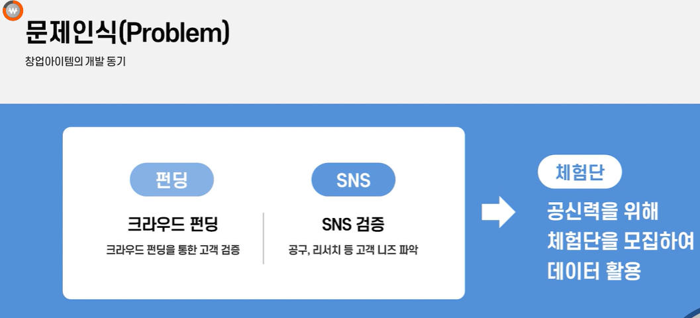
OCR Text
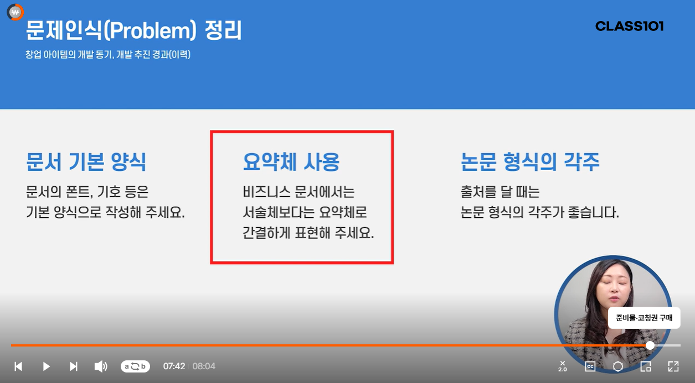
OCR Text
| 문서 기본 양식 | 문서의 폰트, 기호 등은 기본 양식으로 작성 |
|---|---|
| 요약체 사용 | 비즈니스 문서에서는 서술체보다 요약체로 간결하게 표현 (빨간 테두리로 강조) |
| 논문 형식의 각주 | 출처를 달 때는 논문 형식의 각주가 좋음 |
05번 슬라이드의 "예시 ③"(각주 번호 + 하단 출처 정리)이 바로 이 가이드가 권장하는 형식
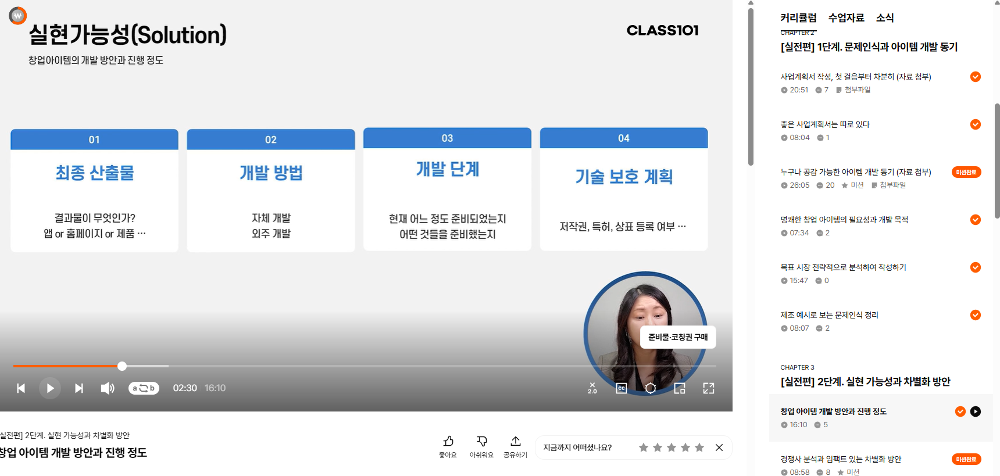
OCR Text
| 01 최종 산출물 | 결과물이 무엇인가? 앱 or 홈페이지 or 제품… |
|---|---|
| 02 개발 방법 | 자체 개발 / 외주 개발 |
| 03 개발 단계 | 현재 어느 정도 준비되었는지, 어떤 것들을 준비했는지 |
| 04 기술 보호 계획 | 저작권, 특허, 상표 등록 여부 … |
이어지는 12–17번 자료가 이 4개 항목을 각각 채우는 구성
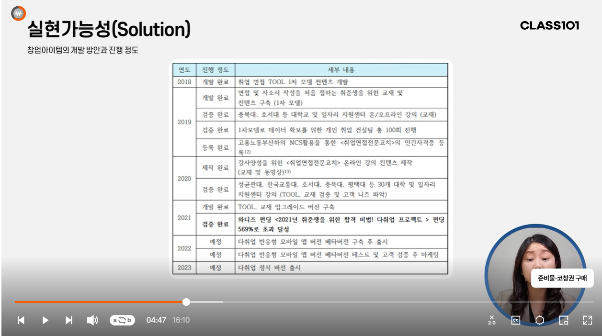
OCR Text
| 연도 | 진행 정도 | 세부 내용 |
|---|---|---|
| 2018 | 개발 완료 | 취업 면접 TOOL 1차 모델 콘텐츠 개발 |
| 2019 | 개발 완료 | 면접 및 자소서 작성 입문자용 교재·콘텐츠 구축(1차 모델) |
| 검증 완료 | 충북대·호서대 등 대학교·일자리 지원센터 온/오프라인 강의(교재) | |
| 검증 완료 | 1차 모델로 개인 취업 컨설팅 총 100회 진행, 데이터 확보 | |
| 2019 | 등록 완료 | 고용노동부 산하 NCS 활용 <취업면접전문코치> 민간자격증 등록 |
| 2020 | 제작 완료 | 강사 양성용 <취업면접전문코치> 온라인 강의 콘텐츠 제작(교재·동영상) |
| 검증 완료 | 성균관대·한국교통대·충북대·평택대 등 30개 대학·일자리 지원센터 강의 (TOOL·교재 검증 및 고객 니즈 파악) | |
| 2021 | 개발 완료 | TOOL·교재 업그레이드 버전 구축 |
| 검증 완료 | 와디즈 펀딩 <2021년 취준생을 위한 합격 비법! 다취업 프로젝트> 569%로 초과 달성 | |
| 2022 | 예정 | 다취업 반응형 모바일 앱 버전 베타버전 구축 후 출시 |
| 예정 | 베타버전 테스트 및 고객 검증 후 마케팅 | |
| 2023 | 예정 | 다취업 정식 버전 출시 |
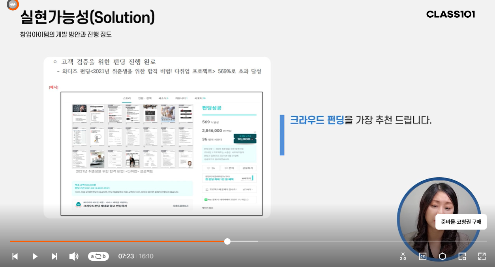
OCR Text
고객 검증을 위한 펀딩 진행 완료 — 와디즈 펀딩 <2021년 취준생을 위한 합격 비법! 다취업 프로젝트> 569%로 초과 달성
[예시] 와디즈 펀딩 결과 화면: 569% 달성 · 2,846,000원 펀딩 · 36명의 서포터
"크라우드 펀딩을 가장 추천 드립니다." — 고객 검증 수단으로서 강조
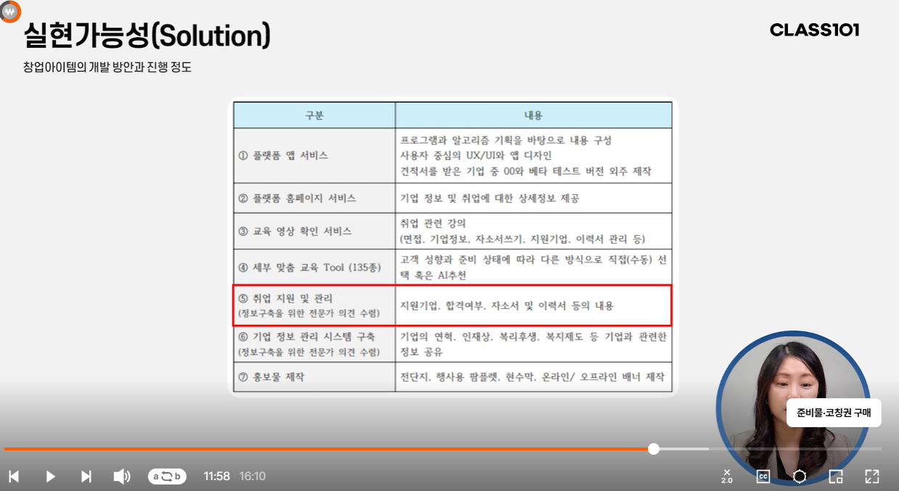
OCR Text
| 구분 | 내용 |
|---|---|
| ① 플랫폼 앱 서비스 | 프로그램·알고리즘 기획 기반 구성, 사용자 중심 UX/UI·앱 디자인, 견적 받은 기업 중 ○○와 베타 테스트 버전 외주 제작 |
| ② 플랫폼 홈페이지 서비스 | 기업 정보 및 취업 관련 상세정보 제공 |
| ③ 교육 영상 확인 서비스 | 취업 관련 강의(면접, 기업정보, 자소서쓰기, 지원기업, 이력서 관리 등) |
| ④ 세부 맞춤 교육 Tool(135종) | 고객 성향·준비 상태에 따라 직접(수동) 선택 혹은 AI 추천 |
| ⑤ 취업 지원 및 관리 (정보구축용 전문가 의견 수렴) | 지원기업, 합격여부, 자소서 및 이력서 등의 내용 |
| ⑥ 기업 정보 관리 시스템 구축 (정보구축용 전문가 의견 수렴) | 기업 연혁, 인재상, 복리후생, 복지제도 등 기업 관련 정보 공유 |
| ⑦ 홍보물 제작 | 전단지, 행사용 팜플렛, 현수막, 온/오프라인 배너 제작 |
⑤번 항목이 빨간 테두리로 강조 표시됨
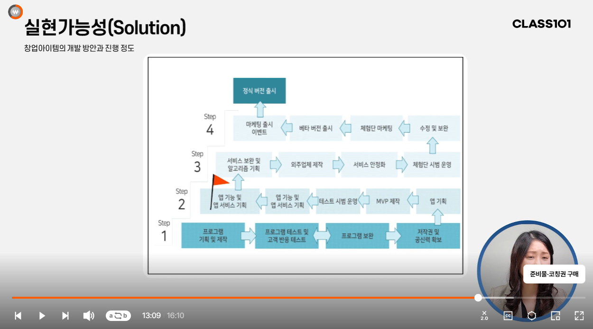
OCR Text
현재 진행 위치(깃발 표시)는 Step 2 초입 — 앱 기획 단계
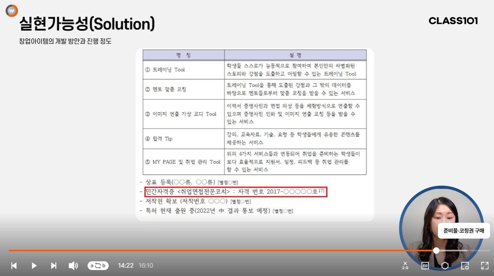
OCR Text
| 명칭 | 설명 |
|---|---|
| ① 트레이닝 Tool | 학생 스스로 능동적으로 참여해 본인만의 차별화된 스토리와 강점을 도출·어필하는 Tool |
| ② 멘토 맞춤 코칭 | 트레이닝 Tool로 도출된 강점과 데이터를 바탕으로 멘토에게 맞춤 코칭을 받는 서비스 |
| ③ 이미지 연출 가상 코디 Tool | 이력서 증명사진·면접 의상 등을 체험방식으로 연출, 인화 및 코칭 제공 |
| ④ 합격 Tip | 강의, 교육자료, 기술, 요령 등 유용한 콘텐츠 제공 |
| ⑤ MY PAGE 및 취업 관리 Tool | 위 4가지 서비스와 연동되어 지원서·일정·피드백 등을 효율적으로 관리 |
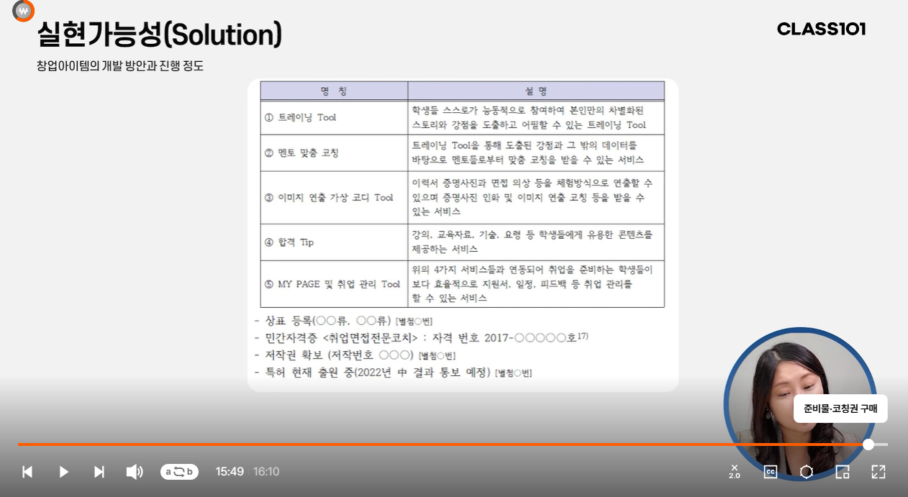
OCR Text
16번과 같은 표·내용을 웹캠 없이 전체 화면으로 캡처한 버전. 5개 Tool 설명, 상표·자격증·저작권·특허 현황 내용 동일.
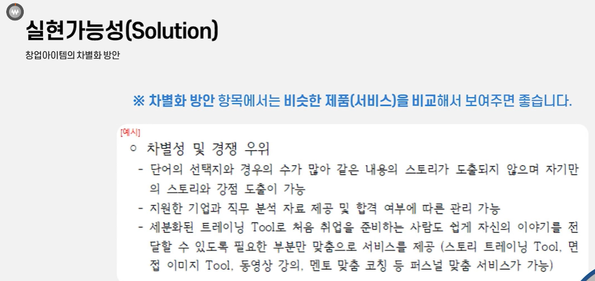
OCR Text
※ 차별화 방안 항목에서는 비슷한 제품(서비스)을 비교해서 보여주면 좋습니다.
[예시] 차별성 및 경쟁 우위
19번(경쟁사 비교표)이 바로 이 가이드를 따른 실제 작성 예 — 19번부터가 1단계 PT에서 세운 "다취업" 아이템 기준 실사례
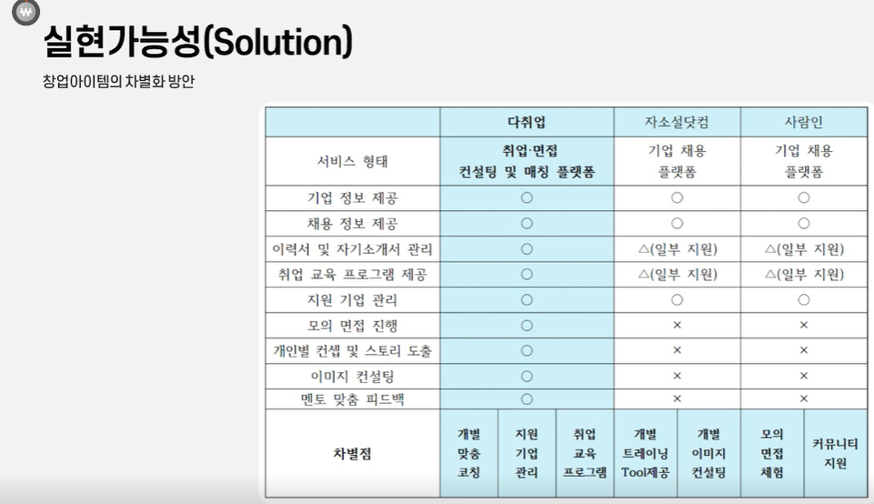
OCR Text
| 항목 | 다취업 | 자소설닷컴 | 사람인 |
|---|---|---|---|
| 서비스 형태 | 취업·면접 컨설팅 및 매칭 플랫폼 | 기업 채용 플랫폼 | 기업 채용 플랫폼 |
| 기업 정보 제공 | ○ | ○ | ○ |
| 채용 정보 제공 | ○ | ○ | ○ |
| 이력서 및 자기소개서 관리 | ○ | △(일부 지원) | △(일부 지원) |
| 취업 교육 프로그램 제공 | ○ | △(일부 지원) | △(일부 지원) |
| 지원 기업 관리 | ○ | ○ | ○ |
| 모의 면접 진행 | ○ | × | × |
| 개인별 컨셉 및 스토리 도출 | ○ | × | × |
| 이미지 컨설팅 | ○ | × | × |
| 멘토 맞춤 피드백 | ○ | × | × |
| 차별점 | 개별 맞춤 코칭 · 지원 기업 관리 · 취업 교육 프로그램 · 개별 트레이닝 Tool 제공 · 개별 이미지 컨설팅 · 모의 면접 체험 · 커뮤니티 지원 | ||
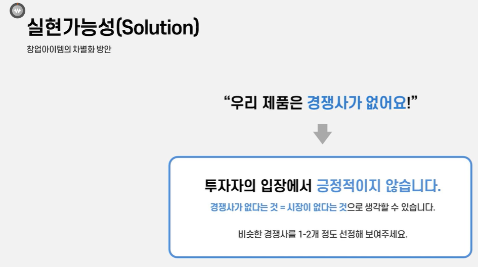
OCR Text
"우리 제품은 경쟁사가 없어요!" → 투자자의 입장에서 긍정적이지 않습니다.
19번(경쟁사 비교표)이 바로 이 지침을 따른 예 — 자소설닷컴·사람인을 경쟁사로 선정
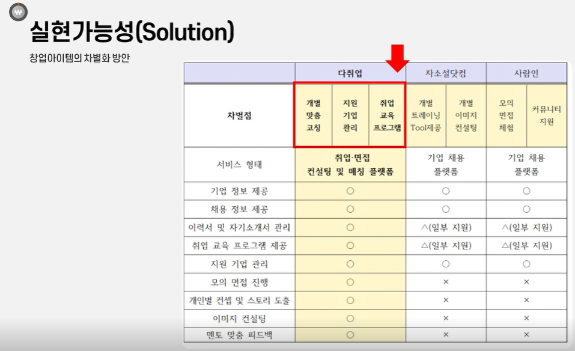
OCR Text
19번과 동일한 비교표에서 "차별점" 행(개별 맞춤 코칭, 지원 기업 관리, 취업 교육 프로그램)이 빨간 테두리와 화살표로 강조 표시됨 — 발표 시 가장 먼저 짚어야 할 부분으로 추정.
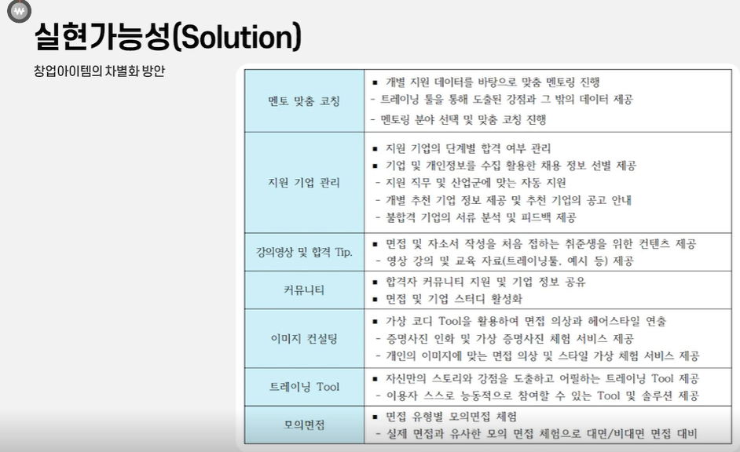
OCR Text
| 항목 | 상세 내용 |
|---|---|
| 멘토 맞춤 코칭 | 개별 지원 데이터 기반 맞춤 멘토링 · 트레이닝 Tool로 도출된 강점·데이터 제공 · 멘토링 분야 선택 및 맞춤 코칭 |
| 지원 기업 관리 | 단계별 합격 여부 관리 · 기업·개인정보 기반 채용 정보 선별 제공 · 직무·산업군 맞춤 자동 지원 · 추천 기업 공고 안내 · 불합격 기업 서류 분석 및 피드백 |
| 강의영상 및 합격 Tip | 면접·자소서 입문자용 콘텐츠 제공 · 영상 강의 및 교육 자료(트레이닝툴, 예시 등) 제공 |
| 커뮤니티 | 합격자 커뮤니티 지원 및 기업 정보 공유 · 면접·기업 스터디 활성화 |
| 이미지 컨설팅 | 가상 코디 Tool로 면접 의상·헤어스타일 연출 · 증명사진 인화 및 가상 체험 서비스 · 개인 맞춤 의상·스타일 가상 체험 |
| 트레이닝 Tool | 스토리와 강점을 도출·어필하는 Tool · 이용자가 능동적으로 참여하는 Tool 및 솔루션 제공 |
| 모의면접 | 면접 유형별 모의면접 체험 · 대면/비대면 면접 대비, 실제 면접과 유사한 체험 제공 |
23번은 같은 표를 전체 화면으로 다시 캡처한 버전(내용 동일)
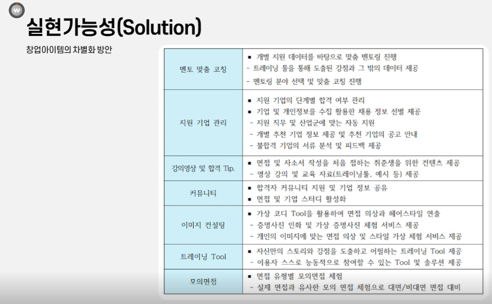
OCR Text
22번과 내용이 동일한 차별점 상세 설명표를 웹캠 없이 전체 화면으로 캡처한 버전.
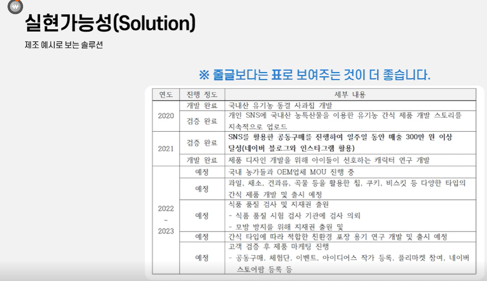
OCR Text
※ 줄글보다는 표로 보여주는 것이 더 좋습니다.
| 연도 | 진행 정도 | 세부 내용 |
|---|---|---|
| 2020 | 개발 완료 | 국내산 유기농 동결 사과칩 개발 |
| 검증 완료 | 개인 SNS에 국내산 농특산물을 이용한 유기농 간식 제품 개발 스토리를 지속적으로 업로드 | |
| 2021 | 검증 완료 | SNS를 활용한 공동구매를 진행하여 일주일 동안 매출 300만 원 이상 달성(네이버 블로그와 인스타그램 활용) |
| 개발 완료 | 제품 디자인 개발을 위해 아이들이 선호하는 캐릭터 연구 개발 | |
| 2022~2023 | 예정 | 국내 농가들과 OEM업체 MOU 진행 중 |
| 예정 | 과일, 채소, 견과류, 곡물 등을 활용한 칩, 쿠키, 비스킷 등 다양한 타입의 간식 제품 개발 및 출시 예정 | |
| 예정 | 식품 품질 검사 및 지재권 출원 — 검사 기관 의뢰, 모방 방지를 위한 지재권 출원 | |
| 예정 | 간식 타입별 친환경 포장 용기 연구 개발 · 고객 검증 후 공동구매·체험단·이벤트·네이버 스토어팜 등 마케팅 진행 |
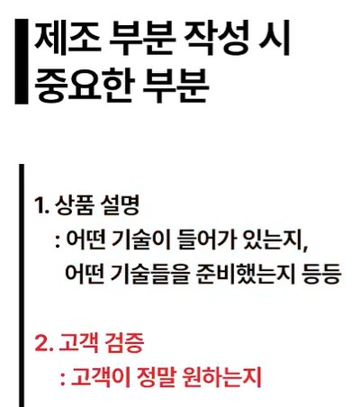
OCR Text
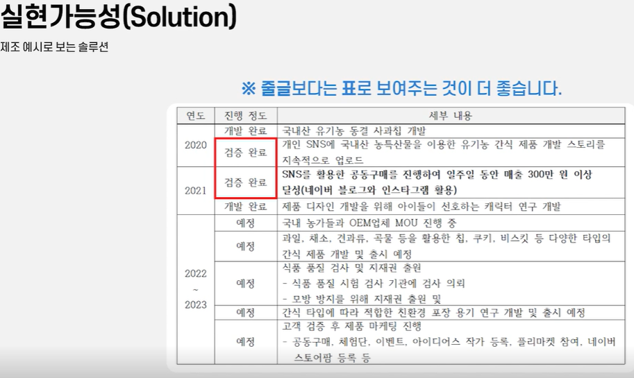
OCR Text
24번과 동일한 연도별 진행 정도표에서 2020년·2021년의 "검증 완료" 행(SNS 스토리 업로드, SNS 공동구매 매출 300만 원 달성)이 빨간 테두리로 강조됨 — 고객 검증 단계를 가장 먼저 짚어야 할 부분으로 추정.
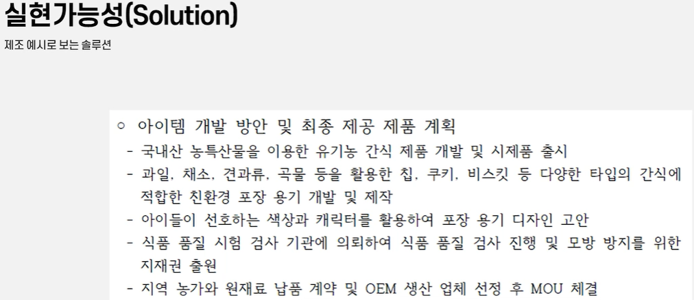
OCR Text
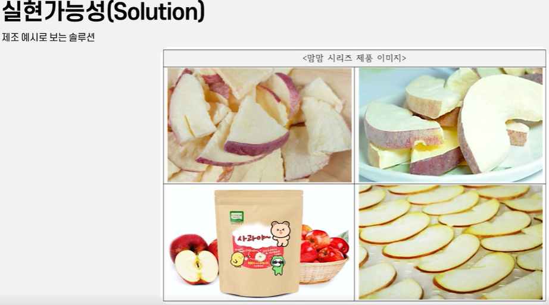
OCR Text
<맘맘 시리즈 제품 이미지> — 사과를 활용한 제조업 아이템 예시 사진 4장
서비스/앱 기반인 "다취업"과 달리, 실물 제조업 아이템을 솔루션 섹션에 담을 때의 구성 예시 — 완성 사진 중심으로 보여주는 방식
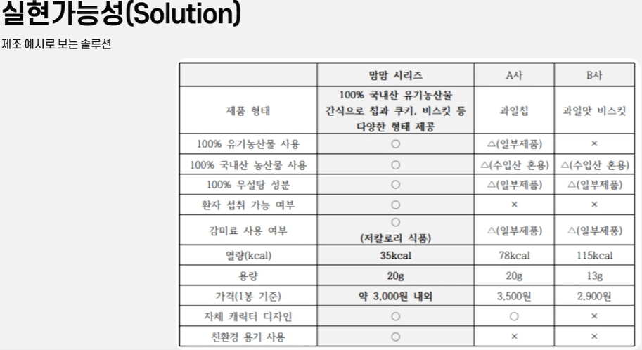
OCR Text
| 항목 | 맘맘 시리즈 | A사 | B사 |
|---|---|---|---|
| 제품 형태 | 100% 국내산 유기농산물 간식으로 칩과 쿠키, 비스킷 등 다양한 형태 제공 | 과일칩 | 과일맛 비스킷 |
| 100% 유기농산물 사용 | ○ | △(일부제품) | × |
| 100% 국내산 농산물 사용 | ○ | △(수입산 혼용) | △(수입산 혼용) |
| 100% 무설탕 성분 | ○ | △(일부제품) | △(일부제품) |
| 환자 섭취 가능 여부 | ○ | × | × |
| 감미료 사용 여부 | ○(저칼로리 식품) | △(일부제품) | △(일부제품) |
| 열량(kcal) | 35kcal | 78kcal | 115kcal |
| 용량 | 20g | 20g | 13g |
| 가격(1봉 기준) | 약 3,000원 내외 | 3,500원 | 2,900원 |
| 자체 캐릭터 디자인 | ○ | ○ | × |
| 친환경 용기 사용 | ○ | × | × |
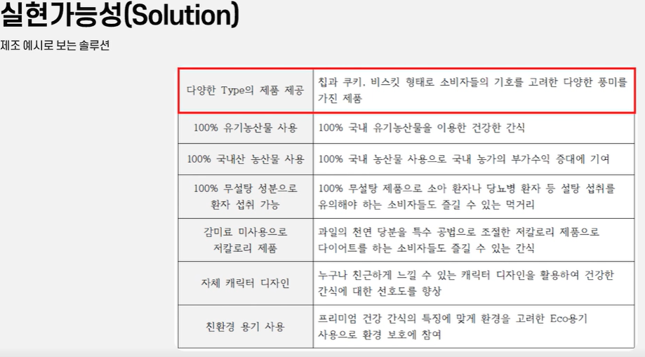
OCR Text
| 차별점 | 상세 내용 |
|---|---|
| 다양한 Type의 제품 제공 | 칩과 쿠키, 비스킷 형태로 소비자들의 기호를 고려한 다양한 풍미를 가진 제품 |
| 100% 유기농산물 사용 | 100% 국내 유기농산물을 이용한 건강한 간식 |
| 100% 국내산 농산물 사용 | 100% 국내산 농산물 사용으로 국내 농가의 부가수익 증대에 기여 |
| 100% 무설탕 성분으로 환자 섭취 가능 | 100% 무설탕 제품으로 소아 환자나 당뇨병 환자 등 설탕 섭취를 유의해야 하는 소비자들도 즐길 수 있는 먹거리 |
| 감미료 미사용으로 저칼로리 제품 | 과일의 천연 당분을 특수 공법으로 조절한 저칼로리 제품으로 다이어트를 하는 소비자들도 즐길 수 있는 간식 |
| 자체 캐릭터 디자인 | 누구나 친근하게 느낄 수 있는 캐릭터 디자인을 활용하여 건강한 간식에 대한 선호도 향상 |
| 친환경 용기 사용 | 프리미엄 건강 간식의 특징에 맞게 환경을 고려한 Eco용기 사용으로 환경 보호에 참여 |
"다양한 Type의 제품 제공" 행이 빨간 테두리로 강조됨
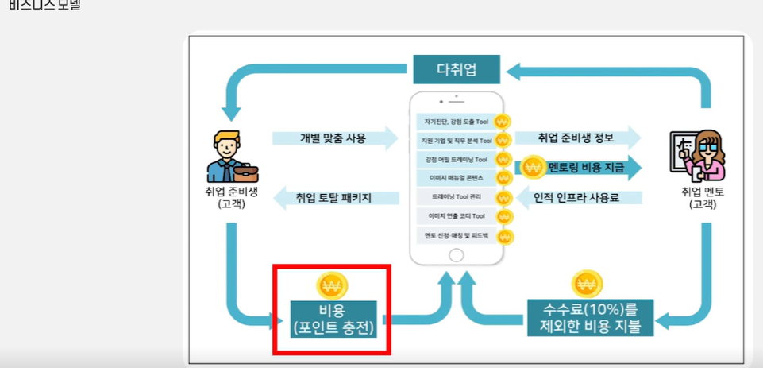
OCR Text
중앙 "다취업" 앱을 중심으로 취업 준비생(고객)과 취업 멘토(고객) 양쪽을 연결하는 구조.
비용 흐름(강조 표시): 취업 준비생 → 비용(포인트 충전) → 다취업 → 수수료 10%를 제외한 비용 → 취업 멘토 지급
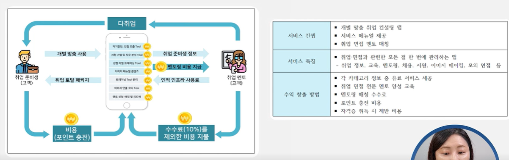
OCR Text
좌측은 01과 동일한 다취업 구조도(축소), 우측은 서비스 정리표.
| 서비스 컨셉 | 개별 맞춤 취업 컨설팅 앱 · 서비스 매뉴얼 제공 · 취업 면접 멘토 매칭 |
|---|---|
| 서비스 특징 | 취업·면접 관련 전 과정을 한 번에 관리 — 취업 정보, 교육, 멘토링, 채용, 지원, 이미지 메이킹, 모의 면접 등 |
| 수익 창출 방법 | 카테고리별 유료 서비스 세팅 · 취업 면접 전문 멘토 양성 교육 · 멘토링 매칭 수수료 · 포인트 충전 비용 · 자격증 취득 시 제반 비용 |
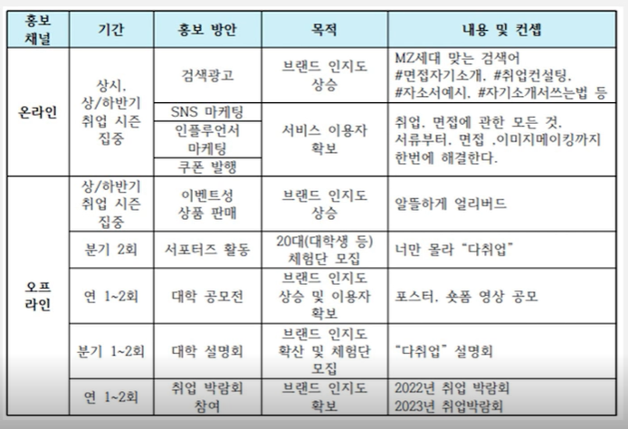
OCR Text
| 채널 | 기간 | 방안 | 목적 / 내용 |
|---|---|---|---|
| 온라인 | 상시, 상·하반기 집중 | 검색광고 | 브랜드 인지도 — MZ세대 검색어(#면접자기소개 #취업컨설팅 등) |
| 상시, 상·하반기 집중 | SNS·인플루언서 마케팅, 쿠폰 발행 | 서비스 이용자 확보 — "서류부터 면접, 이미지메이킹까지 한번에" | |
| 오프라인 | 상·하반기 집중 | 이벤트성 상품 판매 | 브랜드 인지도 — 얼리버드 혜택 |
| 분기 2회 | 서포터즈 활동 | 20대 체험단 모집 — "너만 몰라 다취업" | |
| 연 1~2회 | 대학 공모전 | 인지도·이용자 확보 — 포스터·숏폼 공모 | |
| 분기 1~2회 | 대학 설명회 | 브랜드 확산 및 체험단 모집 | |
| 연 1~2회 | 취업 박람회 참여 | 2022·2023년 취업박람회 참가 |
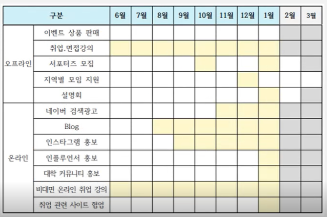
OCR Text
6월 ~ 익년 3월, 10개월 간 추진 일정표 (월별 음영 표시).
오프라인
온라인